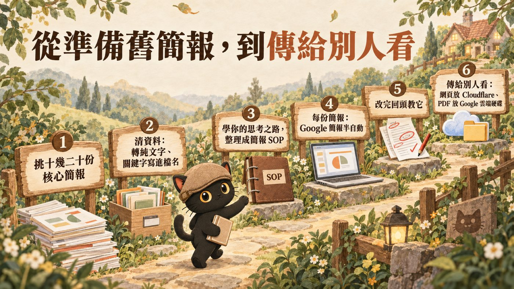
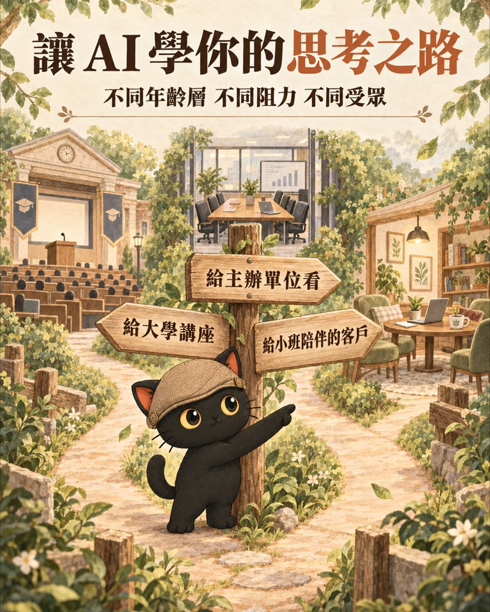
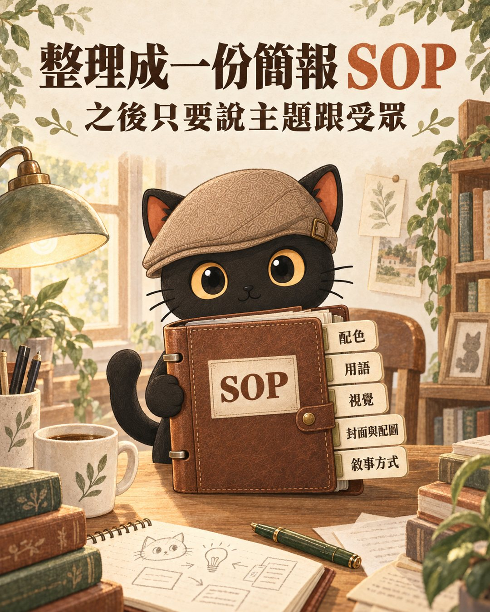

用 AI 預設的東西做簡報，看起來都太像了。我教陪跑學員的做法是：先把你過去比較核心、重要的十幾二十份簡報交給 AI，讓它學你的配色、用語、視覺，也學你的思考之路，這份簡報是給誰看、你怎麼抉擇、怎麼判斷。請它一口氣整理成一份簡報 SOP，以後只要說主題跟受眾，它就做得又快又準。最後附兩種把簡報傳給別人看的方法：網頁走 Cloudflare，PDF 走 Google 雲端硬碟。
- 常做簡報，同一個主題要講給不同對象聽的講師、顧問
- 叫 AI 做過簡報，但覺得成品跟別人長得差不多的人
- 簡報做好要傳給客戶，手機不方便看、PDF 在 LINE 裡過期的人
- 一段請 AI 整理「簡報 SOP」的指令，複製就能用
- 要讓 AI 學的四件事：風格、受眾判斷、配圖邏輯、敘事方式
- 兩種傳簡報的方法：網頁走 Cloudflare，PDF 走 Google 雲端硬碟

AI 做的簡報，為什麼看起來都太像
我給陪跑學員的第一個建議是：建立自己個人的風格、配色，甚至是形象。
如果你用 AI 預設的東西，看起來都太像了。所以還是要有自己的品牌形象概念，自己的配色、自己的形象。想生自己的真人圖像也好，Q 版代言也好，反正就是讓大家看得出來，這是你的。
但不只是配色跟風格，連你的思維邏輯都可以讓 AI 整理出來。下面三步就是這件事。
第一步：準備十幾二十份你最核心的簡報
我建議先請 AI 讀你過去的簡報、PPT。挑比較核心、比較重要的，大概十幾二十份就好。
然後叫它自己去讀內容。
- 叫 AI 做簡報，為什麼最後還是自己一個字一個字改？｜從轉 PPT 自己改，到連動 Google 簡報的半自動流程 這一段只講要準備哪些簡報，那篇有把 PDF、Word 轉成純文字、關鍵字寫進檔名、判斷新舊版本的做法，以及接 Google 簡報的半自動流程。
第二步：讓 AI 學你的思考之路，連判斷一起學
不只是我的配色、我的風格，還有我的用語、文章風格、視覺配色，連我的思維邏輯都要整理出來。
最重要的是思考之路。同一個主題，這份簡報是給大學講座的時候用，還是給主辦單位看的，還是給小班陪伴的客戶看的？不同年齡層、不同阻力、不同受眾，我的思維套路是什麼、我怎麼抉擇、怎麼判斷，都請 AI 弄出來。
圖片也一樣。哪一張放封面、怎麼配圖，這些邏輯跟原則都要教它。
| 要讓 AI 整理的 | 它要學什麼 |
|---|---|
| 風格 | 配色、視覺、用語、文章風格 |
| 受眾判斷 | 給誰看（大學講座、主辦單位、小班陪伴的客戶）、年齡層、阻力 |
| 配圖邏輯 | 哪一張放封面、怎麼配圖 |
| 敘事方式 | 不同主題、不同受眾，怎麼組織、怎麼講 |

第三步：請 AI 一口氣統整成一份簡報 SOP
請它整理一次：把你的思考邏輯、架構、策略，依不同主題、不同受眾的風格和敘事方式，一口氣統整出來，變成一份 SOP。
整理出來之後，叫它先列給你看。錯的直接教它，修好再寫成技能包。
可以直接貼給 AI 的指令：
這樣以後叫 AI 做簡報，我只要講這次是什麼主題、受眾是誰，它自然就知道怎麼幫我組織，做得又快又準。
我陪跑的一位學員，後來請 Codex 幫他完成了簡報。他還蠻開心的，覺得當 AI 主人的感覺還很好。

- 為什麼你的 AI 每次都要重講一遍：教 AI 的四個步驟 這一段只講簡報的 SOP，那篇講怎麼把你帶人的方式整套搬給 AI。
給你的 AI 讀的備忘（人可以跳過）
- 讀使用者提供的十幾二十份核心簡報，整理一份簡報 SOP，至少含：風格（配色、視覺、用語、文章風格）、受眾判斷（給誰看、年齡層、阻力）、配圖邏輯（封面、配圖）、敘事方式（依主題與受眾怎麼組織）。
- SOP 先列給使用者看，依他的修正改完才寫成技能包。
- 之後收到「主題＋受眾」就照 SOP 做簡報。
- 傳遞：可公開的網頁部署到 Cloudflare；客戶客製化方案不直接公開；PDF 傳到 Google 雲端硬碟「客戶方案」資料夾，權限設「知道連結的人可以檢視」，回傳連結。
- 把課前問卷變成簡報，再把流程存成技能包 那篇從課前問卷做出教學簡報，再把步驟存成技能包。
- 把照片放進 NotebookLM，生一份用真實照片的簡報 想讓簡報用自己的真實照片，看那篇。